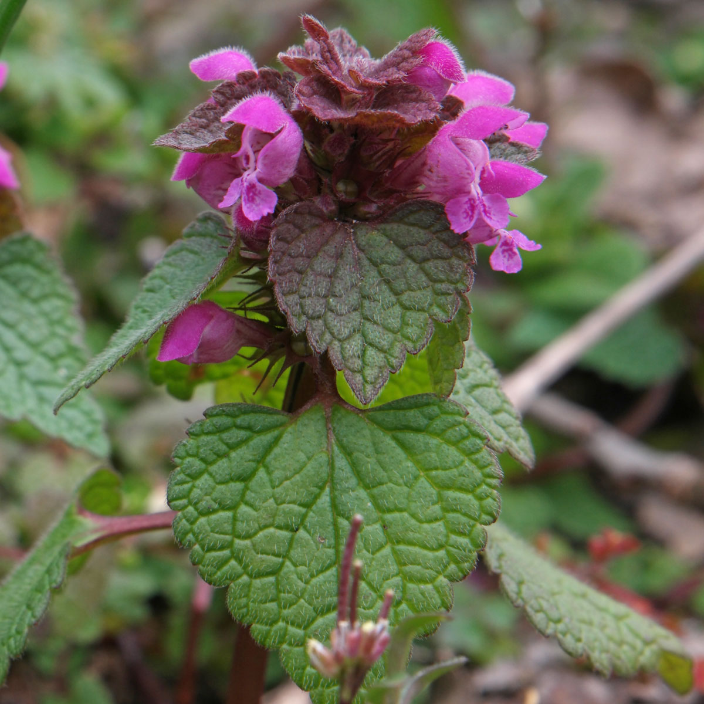
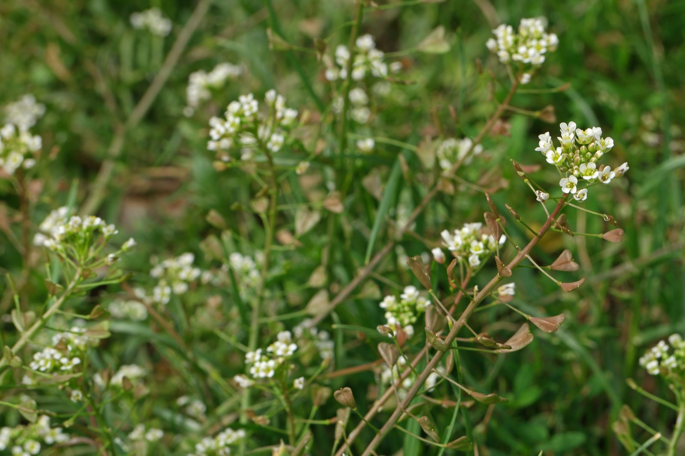

Liste des Angiospermes
LAMIACEAE, Lamium purpureum, Lamier pourpre

ASTERACEAE, Centaurea jacea, Centaurée jacée

FABACEAE, Melilotus alba, Mélilot blanc

LAMIACEAE, Prunella vulgaris, Brunelle commune
PAPAVERACEAE, Chelidonium majus, Grande Chélidoine

APIACEAE, Daucus carota, Carotte sauvage
RANUNCULACEAE, Ranunculus Acris, Bouton d'or

POLYGONACEAE, Polygonum aviculare, Renouée des oiseaux

ASTERACEAE, Chrysanthemum leucanthemum, Marguerite commune

FABACEAE, Trifolium pratense, Trèfle des prés

PLANTAGINACEAE, Plantago coronopus, Plantain corne de cerf

CORNACEAE, Cornus sanguinea, Cornouiller sanguin

BRASSICACEAE, Sinapis arvensis, Moutarde des champs

HYPERICACEAE, Hypericum androsaemum, Millepertuis androsème

BRASSICACEAE, Capsella bursa-pastoris, Capselle bourse-à-pasteur

ASTERACEAE, Achillea millefolium, Achillée millefeuille
POACEAE, Echinochloa crus-galli, Panic des marais

FABACEAE, lotus corniculatus, Lotier corniculé

SCROPHULARIACEAE, Chaenorhinum minus, Petite linaire